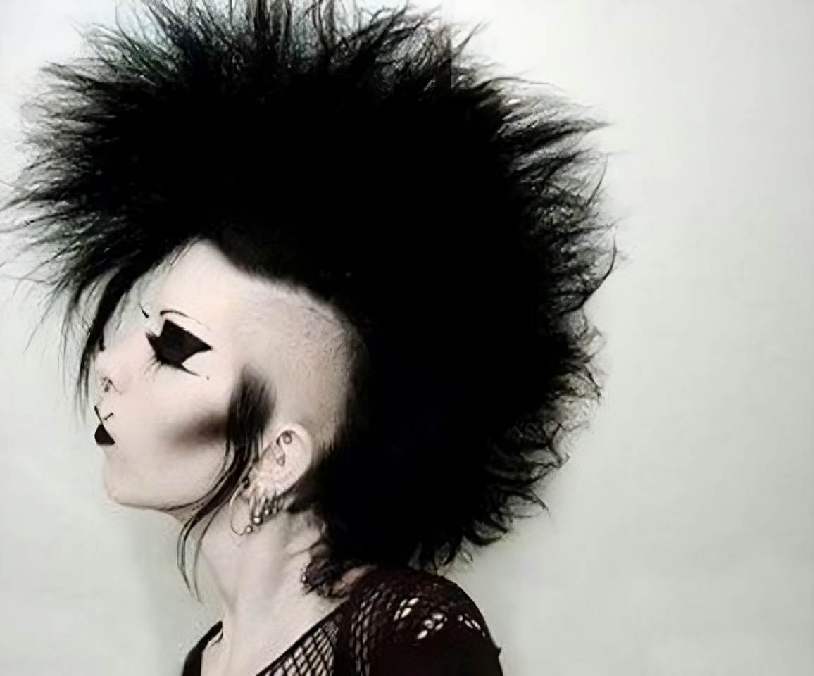
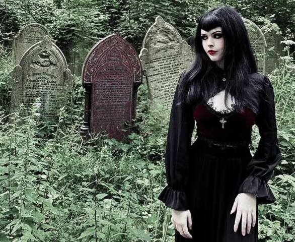
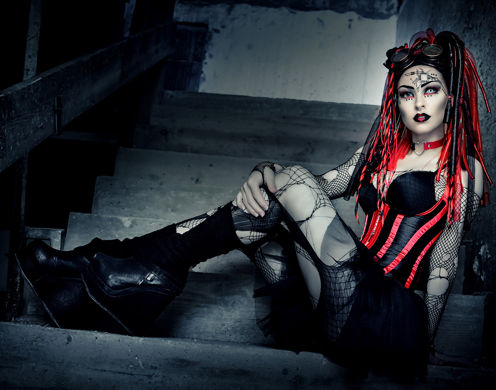

El Arte Gótico, como corriente estética y cultural, ha estado influenciado por múltiples figuras clave que moldearon tanto su concepción original como sus reinterpretaciones modernas. En su forma primitiva, el gótico nació como un estilo arquitectónico en la Europa medieval, especialmente en la Francia del siglo XII, pero con el paso del tiempo fue apropiado y resignificado por distintas corrientes artísticas, especialmente a partir del Romanticismo en el siglo XVIII. La estética gótica, entendida hoy como un conjunto de expresiones ligadas a lo oscuro, lo sublime y lo melancólico, ha recibido influencias de arquitectos, escritores, artistas visuales y cineastas que ayudaron a definir su carácter único.
Su nacimiento está íntimamente relacionado con los cambios sociales, culturales y religiosos de la época, particularmente con el fortalecimiento de la Iglesia y las ciudades.
Vestimenta goth
Estética y tipos de estilos.
El estilo gótico está influenciado por el arte, la literatura y la música del pasado, de vertientes como el Romanticismo del 1800, el arte victoriano, el medieval y el eduardiano. Esta influencia puede verse tanto en la visión melancólica de la vida propia del movimiento gótico como en el uso de prendas que evocan esas épocas pasadas: vestidos vintage, terciopelo, sombreros con plumas, corsés o paraguas de encaje; lo que hace del estilo gótico algo excesivo, teatral y elegante, alejándose de la simpleza.
Sus vestimentas son excéntricas y aristocráticas, con corsés, faldas voluminosas, sombreros de copa o cinturones de arnés. También es común el uso de accesorios en cuero y metal blanco, como anillos, pulseras o colgantes con cruces celtas.
Destacan los materiales como el satén, terciopelo y cuero, que realzan los colores oscuros. Además, las prendas se adornan con encajes, brocados y organza, y suelen incluir mallas tanto en camisas como en medias.

Estílos del goth:

Trad Goth
El estilo original de los años 80 cuando surgió la subcultura gótica como una rama del post-punk. Ropa negra, encajes, maquillaje dramático, peinados altos.

Deathrocker
Inspirado por el punk y el horror, su estética es más “sucia”, underground y provocadora, con una actitud más rebelde.

Romantic Goth
El Romantic Goth suele tener una estética etérea, melancólica y poética, se inspira en la época victoriana, la literatura gótica clásica y el arte prerrafaelita.

Cyber Goth
estética oscura con influencias futuristas y del mundo rave-industrial. Se caracteriza por el uso de látex, gafas de protección, plataformas y colores neón que contrastan con el negro.
Literatura y cine gótico
Un espejo de lo oscuro, lo reprimido y lo sublime
La literatura gótica surgió en Europa a fines del siglo XVIII, como una respuesta emocional y estética al racionalismo de la Ilustración. Fue una corriente que permitió explorar lo irracional, lo misterioso, lo sobrenatural y lo prohibido, temas que la filosofía dominante del momento evitaba o despreciaba. El género nació oficialmente con El castillo de Otranto (1764) de Horace Walpole, una novela que introdujo por primera vez el uso de castillos antiguos, profecías, fantasmas y destinos trágicos. Esta obra sentó las bases para una tradición literaria que abordaría los miedos más profundos de la condición humana: el abandono, la culpa, la locura, el deseo reprimido y la muerte.
A lo largo del siglo XIX, el gótico se expandió, dando lugar a obras emblemáticas que aún hoy definen su esencia. Autoras como Ann Radcliffe añadieron una dimensión psicológica al género, donde lo sobrenatural era ambiguo y sugerente, mientras que autores como Matthew Lewis, con El monje, introdujeron elementos escandalosos, sexuales y sangrientos que sacudieron a la sociedad conservadora de la época. Más adelante, el gótico se entrelazó con la ciencia y la filosofía: Mary Shelley, con Frankenstein, no solo creó un icono cultural, sino que cuestionó los límites de la ciencia, el rol de Dios y la responsabilidad moral del creador. Edgar Allan Poe llevó el género hacia un terreno profundamente psicológico, con cuentos como La caída de la Casa Usher y El corazón delator, en los que el terror no provenía de monstruos externos, sino de la mente humana misma. A finales del siglo XIX, Bram Stoker con Drácula combinó el miedo al otro con el erotismo reprimido, la decadencia aristocrática y la confrontación entre ciencia moderna y superstición ancestral.
Las primeras expresiones cinematográficas de lo gótico se encuentran en el expresionismo alemán, una corriente de los años 20 que usaba escenografías distorsionadas, luces y sombras intensas para representar estados psicológicos alterados. Películas como El gabinete del doctor Caligari (1920) y Nosferatu (1922) son ejemplos fundamentales. La figura del vampiro, los manicomios, los asesinatos y las realidades fragmentadas se convirtieron en íconos visuales del miedo y la alienación.
Durante los años 30 y 40, los estudios Universal llevaron al cine clásico del horror gótico con películas como Frankenstein y Drácula, que definieron una estética visual basada en castillos en ruinas, niebla y dramatismo en blanco y negro. En las décadas siguientes, Hammer Films renovó el género en el Reino Unido con versiones más intensas y sensuales. Mientras tanto, la literatura gótica evolucionó con nuevas expresiones como el gótico sureño, centrado en decadencia social y conflictos internos, y con autoras como Shirley Jackson, quien profundizó en el terror psicológico.
El cine gótico también avanzó hacia lo psicológico y ambiguo, como en The Innocents, y más adelante adquirió un estilo único con directores como Tim Burton, que mezcló lo oscuro con lo romántico y lo fantástico, y Guillermo del Toro, quien rindió homenaje al gótico clásico en obras como Crimson Peak. Hoy en día, tanto la literatura como el cine gótico siguen vigentes, explorando temas como el trauma, la locura, la identidad y el deseo. El gótico contemporáneo continúa siendo una poderosa herramienta para representar lo oculto, lo reprimido y lo profundamente humano.